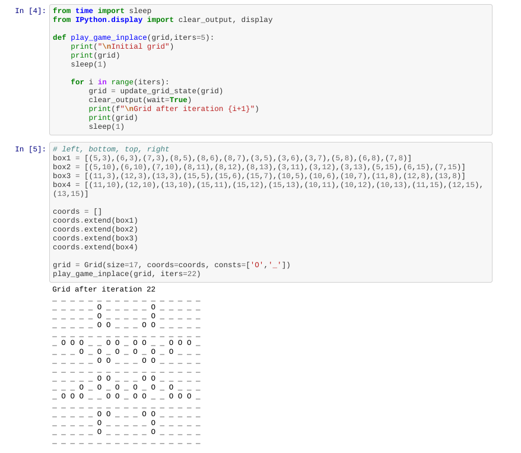

I wanted to play around with Jupyter Notebooks and modular programming and decided to try to implement John Conway's "Game of Life".
Conway's Game of Life describes a set of rules that govern a universe of cells, where each cell can have one of two states: ALIVE or DEAD (aka "on" or "off"). For a given configration of cells, the next iteration is determined by simultaneously applying the rules to each cell in the current configuration. The simplified rules are as follows:
- Any live cell with two or three live neighbours survives.
- Any dead cell with three live neighbours becomes a live cell.
- All other live cells die in the next generation. Similarly, all other dead cells stay dead.
I had attempted to implement Conway's Game of Life before, and while it wasn't a lot of lines of code to implement, I found that the code wasn't the most readable. For this implemenation, I wanted to make the code as readable as possible by also making it very modular. I also wanted to use this as an excuse to play with Jupyter notebooks.
Click here to see my first attempt at creating a Jupyter Notebook to implemet Game of Life. While the code works and is very readable, a few of my colleagues at Recurse Center shared their opinion that they thought I included too many helper functions. So, I decided to heed their advice and make a second attempt that refactored the code a bit. Here is attempt #2.

There are a lot of fun things you can do with Game of Life. Here's a great write-up about some of the interesting patterns, and here is an interview with John Conway.